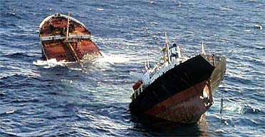
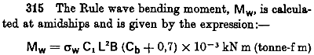

|
WAVE DAMAGE. November 19, 2002 Prestige oil tanker breaks in half. Photo: AP |
 |
The proportions of Noah's Ark are explicitly stated in Genesis 6:15; 300 x 50 x 30 cubits. The vessel is ten times as long as it is high, which means that the bending loads applied by waves will be significant. The Ark has similar proportions to a modern ship, and ships are not supposed to break in half. To avoid making a ship that is too weak in the middle, there are rules.
Wave bending moment (Mw) is about waves trying to bend the hull. If the hull can be built to withstand this amount of bending then it should be strong enough in the worst modern sea. What about the waves of the flood? See Waves.
The Calculator. Select a cubit and a general shape. The numbers in red indicate how strong the hull needs to be in the middle. Of course, that still leaves all the engineering associated with hull construction yet to be done. See Midsection
|
|
Note:
How strong did the Ark have to be?
To endure several months in the open sea, the wooden hull of Noah's ark must have a certain minimum strength. Factors such as uneven cargo distribution, increased length or a more "block shaped" hull (block coefficient) accentuate the need for a strong hull. Another factor is the severity of the sea state. For a discussion on the flood waves, refer to Waves.
For a first approximation, we will consider the worst seas of today. In ship design, one of the first things to check is the bending strength of the hull. A ship riding over large waves experiences bending forces (causing a moment or torque) that flex the hull up and down along its length (hogging and sagging). Without adequate strength and rigidity, the ark could leak or break when it meets high seas. The following calculations are based on standard procedures for ships operating in the open sea.
PreambleApplicability: The following calculations apply to ships longer than 90m. Cargo ships with homogenous loading or less than 250m long only require a still water bending moment to be calculated amidships.
Wood in place of steel: The applied wave loads are related to hull geometry and are independent of hull material. The data will be suitable for the timber ark up to the point where material properties such as stress and stiffness are investigated. In other words, the wave bending moment is externally applied, so is independent of hull material (assuming adequate stiffness as dictated by waterproofing requirements).
These approximations are based on the vessel's length, width and shape, using a worst case sea state. Several standards are compared, with the most conservative estimate recommended (ABS Rules).
Bending moment is the amount of 'bending' the hull experiences. It is highest in the middle (amidships), and occurs when the hull is bridging 2 waves (sagging or positive bending). Another situation is when a wave is supporting the hull amidships as if the ship was riding a wave (hogging or negative bending). Both need investigation since either case might be the failure mode at sea, and they represent the maximum amplitudes of fatigue loading.
Firstly, we must define the hull size - by choosing the most suitable cubit.
Next, the hull shape: The hull of a ship has certain coefficients of form. One of the most fundamental is the Block Coefficient Cb, which describes how well the hull approximates a rectangular prism. It is calculated by comparing the design displaced volume with the enclosed volume of its maximum wetted dimensions.
Cb = (Displaced Volume) / ( L * B * T )
Where L is length, B is beam or breadth, and T is the draft. The density of sea water (1.025) may need to be accounted for in determining the draft.
The sculptured hulls of a small ship such as a harbor ferry might have a Cb of only 0.4, whereas the rectangular cross-section of large crude oil carriers can have a Cb of almost 0.9. Ark depictions shown as almost a pure rectangular prism could have a Cb as high as 0.98.
Using the popular choice of 18" for the cubit, the ABS wave bending moment rules to calculate the hogging and sagging moments, with a block coefficient of 0.9, gives the following values; Hogging (tf-m): 65071.4912, Sagging (tf-m): -67008.743. Use the calculator above to test the effect of hull changes.
Definition of symbols;
L =length (m)
B =beam or breadth (m)
Cb =Block Coefficient as defined above.
American Bureau of Shipping
ABS Plaza
16855 Northchase Drive
Houston Texas 77060 USA
Steel Vessel Rules 2004, Part 3, Hull Construction and Equipment
http://www.eagle.org/rules/downloads/svr2004/Part%203_e%20-%20Feb04.pdf
Free downloads here; http://www.eagle.org/rules/downloads.html#legal
Bending Moment
ABS Rules for Building and Classing Steel Vessels 2004. Part 3 , Chapter 2, Section 1, Subsection 3.5.1 "Wave Bending Moment Amidships"
(Note that the ABS Rules make a distinction between maximum Hogging and Sagging conditions. Also note that the ABS Rules are the most conservative of these classification societies)
Mw = - k1 * C1 * L2 * B * (Cb + 0.7) / 1000 (sagging)
Mw = k2 * C1 * L2 * B * Cb / 1000 (hogging)
Where:
C1 = 10.75 - ((300-L) / 100) ^ 3/2 (for 90<= Length <= 300m)
Sagging k1 = 11.22 (for units in tf.m)
Hogging k2 = 19.37 (for units in tf.m)
Rules for Steel Ships.
Bending Moment
Lloyd's Chapter D, part 315 gives a formula for estimating the bending moment midway along the hull (amidships) that could be applied by typical sea waves. The factor C1 is tabulated and based on shipping data.

Linear interpolation of tabulated values near the ark length gives C1 = 6.2527 + 0.0178*L
Lloyd's specifies a material stress of 98.1Mpa (assumes a steel hull). All other variables are as previously defined.
Rules and Regulations for the Construction and Classification of Steel Vessels. 1977
International Register for the classification of ships and aircraft.
31,rue Henri-Rochefort 75821 PARIS CEDEX 17
ISBN 2-900344-50 (English Edition)
Bending Moment
BV 5-23-31 The maximum rule value of wave bending moment in kN.m, is given by the
formula;
MH = H L2 B ( Cb + 0.7 ) 10 -3
Where
H = 703 - 65 ( (300 - L) / 100) ^ 3/2 if L < 300
ABS Rules for Building and Classing Steel Vessels 2004. Part 3 , Chapter 2, Section 1, Subsection 3.5.3 "Wave Shear Force"
The maximum shearing force induced by wave, in kN (tf, Ltf)
Fwp = + k1 * F1 * C1 * L * B * (Cb + 0.7) / 100 (pos shear)
Fwn = - k1 * F2 * C1 * L * B * (Cb + 0.7) / 100 (neg shear)
Where;
k1 = 30 (3.059, 0.2797) kN (tf,Ltf)
F1 = distribution factor, as shown in 3-2-1/Figure 3
F2 = distribution factor, as shown in 3-2-1/Figure 4
This factor is 0.7 amidships rising to 1.0 at approx 25% from bow/stern. We
assume the highest value 1.0.
C1 = C1 = 10.75 - ((300-L) / 100) ^ 3/2 (for 90<= Length <= 300m)
Same as for bending moment
L = length of vessel in m (ft)
B = breadth of vessel in m (ft)
Cb = block coefficient, but not to be taken less than 0.6
The calculations follow the same general form, where the wave bending moment is proportional to L3.5 and also to B1. For ships up to 300m long, the intensity of bending in the hull is very sensitive to the ship's length (L). So a long, wider hull is more likely to break in half (or leak badly) due to the wave induced bending moment.
Supporting these relatively simple calculations is an extensive record of monitoring ship stresses during service. These formulae have been determined on the basis of sea states throughout the world, and take account of storms and worst case uncertainties (just the wrong combination of wave height, length, etc). While direct stress analysis using Finite Element Methods are possible today (barely!), these simple formulae are the trusted solution. Highly detailed analysis is required if the designer intends to use a number lower than these.
1. Ships are not supposed to break in half. When the Prestige went down it leaked more than 50,000 tonnes of oil, expected to foul 1000 beaches for the next ten years. Estimates for cleanup and fishing industry losses are as high as 10 billion euros, making it the most expensive maritime accident in history. The ABS report released in Feb 2003 could not pinpoint the cause of the hull wall failure, but was critical of Spain's refusal to allow the ship to take shelter when it began to list 20km off the coast. Spanish authorities had the ship towed out to sea to face high winds and heavy seas. It took six days to break in half completely. In May 2003 Spain lashed out at the ABS, filing a $700 million claim against the non-profit organization. In the last 25 years, only one ABS certified ship has gone down - in a typhoon. See ABS reports. Return to text